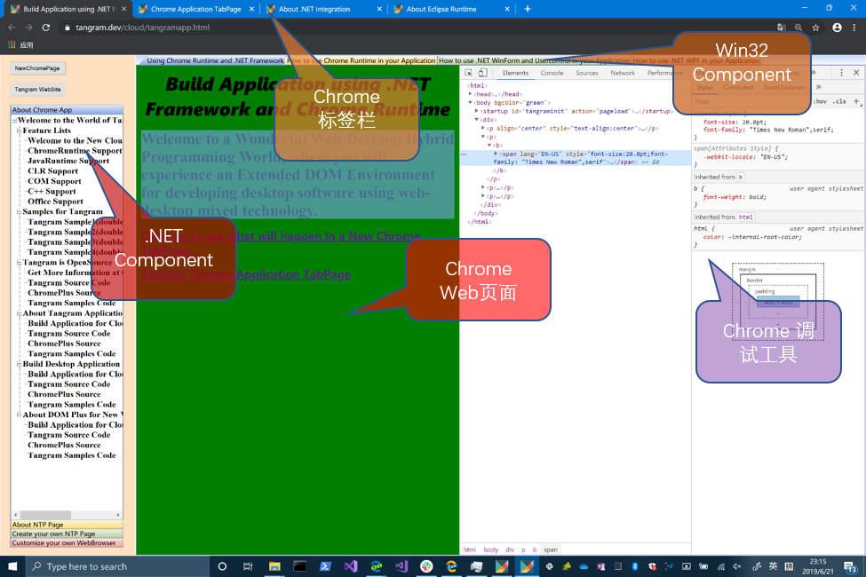

每当我们谈起被称之为 “经典” 的那些技术，我们内心充满着感激、忐忑与敬畏……
科技发展的不同阶段，都会存在对应时代的经典之笔，以点缀那个时代的精彩，经典之所以被称之为“经典”，不仅仅是因为其价值本身，同时还意味着一种特定时期产生的深远影响……。我们应该怎样表达对经典的致敬？
让经典顺应时代的节奏得以传承 或许是向经典致敬的一种方式……。
我们很幸运，因为我们受益于大量的经典之作，是造就经典的那些人、那些成果让我们看得更远，激励我们不断的创造…… 。
NewDoc
NewDoc2
Customized Doc1
Customized Doc2
Customized Doc3
Customized Doc4
Customized Doc5
AppWebPage1 AppWebPage2 AppWebPage3 AppWebPage4 AppWebPage5 AppWebPage6
现代桌面软件面临的三个关键问题
Web Runtime的解决方案
缺乏与之适配的软件生态 ，这一点直接导致大量成熟的软件组件（.NET、Java、COM、C++、Web组件）积累，
以及广泛的软件人力资源难以根据对应的软件形成有针对性的软件增值服务，
会在根本上制约软件成为互联网服务的前端环节 ，更难以为之建立具有服务性质的后端服务 ；
与主流开源项目 缺乏对接，使得软件依赖的关键技术缺乏强有力的技术社区支持。以Chrome、Eclipse为
例，由于是开源的，拥有了天然的社区支持，使得软件本身的发展会变得良性、有持续生存的依据；
现代浏览器本身就是一款桌面软件，由于支持html文档，使得内容生态变得非常丰富。毋庸置疑，
浏览器软件的很多品质局限于浏览器本身是对软件生产力的一种禁锢，
而浏览器本身的很多优势恰恰是桌面软件缺乏的，就是说，桌面软件缺乏浏览器内在的结构 ，
使得其适应互联网的发展方面显得力不从心。
从技术、人力等角度看，以上三个问题，极大的超越了一个软件团队的技术驾驭范围以及人力基础能够承载的界限 ，
也就是说，很难想象一个团队可以同时系统的面对如上三个问题。桌面软件发展至今有接近30年的历史了，来自.NET、
Java、COM、C++、Web等领域的成熟技术是海量的，有没有一个通用的技术途径 ，使得软件团队可以规避整体的技术、人力储备局限，
直接将成熟的技术用于他们关注的软件服务本身，这个问题是一个富有挑战性的问题。
从软件复用的角度看，软件服务团队，不应该将精力放在如何实现大范围整合的具体技术上，
事实上，应该有一种通用的技术途径 ，使得软件服务团队专注于如何用成熟的软件资源内容“组织”软件服务，这一点需要在宏观上解决一个合理的、
通用的适配问题，也就是说，
当前大环境需要一类简单的技术，使得应用程序在基础结构的根基环节，
一次性的（与技术相对无关的）解决好一个桌面软件与“Web、.NET、Java”等主流技术的基于生态技术的衔接问题，
这个衔接对软件服务团队而言是一致的、几乎无门槛的、可以最大限度利用软件组件资源以及人力资源的“一站式”解决方案
。
WebRuntime定义了一个应用程序的基础结构 ，
给出了一站式的解决方案，一步到位的将：
软件生态链 (面向.NET组件资源、Java资源、Web资源的内容生态链)主流开源项目对接（Chromium Project、Eclipse、.NET Core等开源项目） 集成现代浏览器全部功能（全功能Built-in WebBrowser 支持）
通过一个单一的技术架构，一次性的提供给软件架构者，使得每一款基于WebRuntime技术开发
的.NET桌面应用，直接具备以下几个关键特征：
支持Common Layout Engine ：耳目一新的动态布局引擎，
将盘活各种.NET组件、C++组件以及Web组件...，为形成软件生态奠定现实的基础。动态布局一
动态布局二
动态布局三
动态布局四
动态布局五
动态布局六
支持Common Web Runtime ：独特的Built-in浏览器技术，
使得您可以以各种灵活的方式驾驭"Web-Desktop"混合内容，您的桌面软件可以最大限度、最灵活的方式适应互联网各种服务，一个更大的DOM，
允许您实现Web端对桌面端最佳的控制，使得应用页面化成为现实，进而使得软件可以基于Web技术构建互联网内容生态。
支持Common Eclipse Runtime ：Bulit-in Eclips支持，
使得您可以自由驾驭Java组件，将Java、.Net、JavaScript巧妙的融合在一起，实现强大的“Web-桌面端”的互操作。
结合Eclipse本身的生态技术，WebRuntime借助于CER，使得应用开发者可以构建以Java基础的应用生态。
Sunny试图通过一个单一的技术架构，整合:
Microsoft .NET(Core)
Google Chromium
IBM Eclipse
使得软件生态可以建立在庞大技术社区基础之上，同时使得互联网服务 成为桌面软件的基础部分，开发者只需充分利用，而不用担心衔接问题。
WebRuntime的Desktop应用新 世界
DOM 定义Application
用DOM定义新的桌面应用元素，使得我们可以在一个软件系统之外借助Web页面给应用系统增加新元素
Common Web Runtime constructs a new mixed world of native UI elements and web elements.
In this world, a new web page is defined. While taking into account the standard web page,
the ability to use native components as DOM elements is added ...
WebRuntime的桌面应用新 世界
Common Layout Engine Common Layout Engine是一个多层次、网格化、可嵌套、易于描述的UI布局描述引擎。
所谓网格 ，是一个m行n列的窗口矩阵（1行n列的网格可以理解为有n个选项卡的选项卡窗口 ），
而可嵌套是指矩阵中的每个“格”可以动态嵌套多个网格层，运行时只有一层可见。
一般说来，某个布局在设计时可能是不确定的，并且可以在运行时动态生成，由于不同的场景、权限等因素，
可能会进行不同的动态匹配。实际上，柔性布局是多层网格动态变化的结果。
网格有两种描述方式：其一是基于XML，这样的描述可以用于各种编程语言；其二是基于Web页面的
DOM元素，这个方案的优势是易于与主流的互联网技术衔接。
动态布局一
动态布局二
动态布局三
动态布局四
动态布局五
动态布局六
动态布局DOM描述（按某个按钮看DOM输出）：
网格：Grid
网格
是一个m行n列的窗口矩阵，做为一个容器，网格中的一个具体的"格"可以承载新的网格，
或者承载一个可编程对象，例如可以承载.NET Usercontrol,可以承载WinForm或者WPF对象，
也可以是C++实现的其他对象，例如MFC CView……
在一个具体的页面内或者一个XML文档中，可以用如下格式定义一个与“网格”对应的DOM元素，
这里给出一个3行3列的网格结构对应的DOM描述，具体请参考Sunny.index.html
<content_grid target="mainClient">
<fission>
<xobj rows="3" cols="3" width="150,100,100" height="200,180,100">
<xobj objid="SunnyCtrl.UserControl1,SunnyCtrl"></xobj>
<xobj objid="SunnyCtrl.UserControl2,SunnyCtrl"></xobj>
<xobj objid="SunnyCtrl.UserControl3,SunnyCtrl"></xobj>
<xobj objid="SunnyCtrl.UserControl3,SunnyCtrl"></xobj>
<xobj objid="nucleus"></xobj>
<xobj objid="SunnyCtrl.UserControl1,SunnyCtrl"></xobj>
<xobj objid="SunnyCtrl.UserControl1,SunnyCtrl"></xobj>
<xobj objid="SunnyCtrl.UserControl3,SunnyCtrl"></xobj>
<xobj objid="SunnyCtrl.UserControl2,SunnyCtrl"></xobj>
</xobj>
</fission>
</content_grid>
一个没有子节点的网格，可以承载具体的可编程对象，或者运行时承载一个新的网格结构，取决于具体的编程需求。
当我们明确需要一个网格可以承载具体对象的时候，我们需要指定对象的“objid”属性。
当前WebRuntime可以支持几类可编程对象，具体包括：
.NET UI对象 ActiveX控件对象 符合一定规范的C++对象 Web页面
对于.NET UI，我们泛指WinForm、Usercontrol、WPF，后续版本将增加UWP支持。一个网格加载.NET UI，
objid属性就是该对象的AssemblyQualifiedName，通常情况下，就是“a.b,c”这样的字符串，其中a是对象的NameSpace，
b是类名字，c是组件名。
例如，假设我们有一个.NET组件库xxx.dll，其中有一个FormX对象，其NameSpace是“MyNamespace”，
那么objid即为“MyNamespace.FormX,xxx”,对应的网格节点如下：
<xobj objid="MyNamespace.FormX,xxx"></xobj>
标签（选项卡）
如果一个网格元素包含子节点，同时这个网格没有“rows”、“cols”属性，我们将其解释为一个“选项卡（标签）”，
其包含的选项卡个数就是其子节点个数。
标签风格:用style属性设定，style="mn"(默认值是"19"),
其中m的值可以为1(左)、2(顶)、3(右)、4(底)，分别对应
四个边；n的值可以取0-9，对应10种不同的选项卡显示样式。
Tabbed Layout
描述
显示风格style="23"表明标签是左侧标签
在Web页面上或者XML中，可以按照如下方式描述一个标签(选项卡)：
<tabgrid target="mainClient">
<fission>
<xobj style="23">
<xobj caption="Introduction to Tabbed Grid" objid="nucleus"></xobj>
<xobj caption="Second Page" objid="SunnyCtrl.UserControl1,SunnyCtrl"></xobj>
<xobj caption="Third Page" objid="SunnyCtrl.UserControl2,SunnyCtrl"></xobj>
</xobj>
</fission>
</tabgrid>
显示风格style="19"表明标签是上侧标签
在Web页面上或者XML中，可以按照如下方式描述一个Tabbed Grid：
<tabgrid target="mainClient">
<fission>
<xobj style="19">
<xobj caption="Introduction to Tabbed Grid" objid="nucleus"></xobj>
<xobj caption="Second Page" objid="SunnyCtrl.UserControl1,SunnyCtrl"></xobj>
<xobj caption="Third Page" objid="SunnyCtrl.UserControl2,SunnyCtrl"></xobj>
</xobj>
</fission>
</tabgrid>
显示风格style="18"表明标签是抽屉式标签
在Web页面上或者XML中，可以按照如下方式描述一个标签结构：
<tabgrid target="mainClient">
<fission>
<xobj style="18">
<xobj caption="Introduction to Tabbed Grid" objid="nucleus"></xobj>
<xobj caption="Second Page" objid="SunnyCtrl.UserControl1,SunnyCtrl"></xobj>
<xobj caption="Third Page" objid="SunnyCtrl.UserControl2,SunnyCtrl"></xobj>
</xobj>
</fission>
</tabgrid>
Multi-Level Grid Layout
网格布局结构支持任意级别的“网格复合“，因为“tab结构”可以有多种“样式”，每个特定的子网格可以
承载各种可编程对象，以此为基础可以形成更加一般化、综合的布局结构，宿主应用系统可以通过网
页呈现出兼具原生应用与web应用的双重优势的网页应用生态 。这里显示的是Web页面上或者xml
中如何表达一个“三级复合”网格的DOM结构：
<compositegrid target="mainClient">
<fission>
<xobj style="23">
<xobj caption="Start Page" rows="3" cols="3" width="150,100,100" height="200,180,100">
<xobj objid="SunnyCtrl.UserControl1,SunnyCtrl"></xobj>
<xobj objid="SunnyCtrl.UserControl2,SunnyCtrl"></xobj>
<xobj objid="SunnyCtrl.UserControl3,SunnyCtrl"></xobj>
<xobj objid="SunnyForms.Form1,SunnyForms"></xobj>
<xobj style="18" activepage="1">
<xobj objid="SunnyCtrl.UserControl2,SunnyCtrl" caption="First Page"></xobj>
<xobj objid="nucleus" caption="Compound grid World Gives You An Unexpected Surprise"></xobj>
<xobj objid="SunnyCtrl.UserControl1,SunnyCtrl" caption="Third Page"></xobj>
</xobj>
<xobj objid="SunnyCtrl.UserControl1,SunnyCtrl"></xobj>
<xobj objid="SunnyCtrl.UserControl1,SunnyCtrl"></xobj>
<xobj objid="SunnyCtrl.UserControl3,SunnyCtrl"></xobj>
<xobj objid="SunnyCtrl.UserControl2,SunnyCtrl"></xobj>
</xobj>
<xobj objid="SunnyCtrl.UserControl3,SunnyCtrl" caption="Second Page"></xobj>
<xobj objid="SunnyCtrl.UserControl2,SunnyCtrl" caption="Third Page"></xobj>
</xobj>
</fission>
</compositegrid>
更多的复合结构，可以点击以下按钮：
复合网格一
复合网格二
复合网格三
复合网格四
WebRuntime的桌面应用新 世界
Common Web Runtime Common Web Runtime(CWR)是Google Chromium 项目的动态链接库版本
CWR包含Chromium项目的所有代码。其目标是使Windows桌面应用程序按照一致的方案实现内置的现代浏览器模型，
使宿主桌面软件自然成为现代web浏览器。与传统浏览器不同的是，与CWR集成的应用程序有自己的应用对象模型，
由于浏览器部分的所有功能都是基于dll模式提供的，CWR事先并不知道宿主应用程序是什么，也不清楚宿主应用
程序包含什么对象模型，CWR解决了宿主模型和浏览器标准模型之间的连接问题，因此只有在定义了特定的宿主应用
程序之后才能确定真正的浏览器模型。
宿主应用程序的DOM模型将是标准浏览器的DOM模型的一个超集。换句话说，宿主应用程序系统将提供标准浏览器中无法提供的应用
模型部分。宿主应用程序的实际DOM模型可能包括不属于标准浏览器DOM模型的成员，这意味着宿主应用程序同时支持标准网页和基于
应用程序的网页（标准浏览器模式下没有基于应用程序的网页）。由于宿主应用程序内置了Chromium项目的所有功能，应用程序开发
人员可以基于Web技术为宿主应用程序开发新的应用程序内容，使宿主应用程序成为基于Web技术的软件生态系统。
CWR在DOM方面，增加了.NET Framework的支持，允许在Web页面上用DOM的规则写针对.NET UI的DOM元素，也就是说
WinForm、Usercontrol、WPF等对象可以做为页面元素的一部分体现在实际的开发之中，这一点对形成应用生态非常重要。

Using Browser Window
Using Browser as Child Window Object
Create BrowserForm
Introduction
Browser Form App 1
Browser Form App 2
Using .NET UI Object
Create Win Form
Introduction
Form App 1
Form App 2
WebRuntime的桌面应用新 世界
Common Eclipse Runtime Common Eclipse Runtime(CER)是Eclipse 项目的动态链接库版本
它包含Eclipse项目的所有代码。其目标是使windows桌面应用程序按照一致的方案实现内置的Eclipse模型，
使宿主桌面软件自然成为Eclipse的启动程序。
与传统的eclipse不同的是，与CER(Common Eclipse Runtime)集成的应用程序有自己的应用程序对象模型，
由于eclipse部分的所有功能都是基于dll模式提供的，因此CER事先不知道宿主应用程序是什么，宿主应用程序
包含什么对象模型，CER解决了宿主模型和eclipse标准模型之间的连接问题，因此只有在明确宿主应用程序之后才能确定真正的
eclipse模型。同时，宿主应用程序的OSGi模型将比标准eclipse的OSGi模型更大。换句话说，宿主应用程序系统将提供标准eclipse中
没有提供的应用模型部分。
宿主应用程序的实际OSGi模型可能包括不属于标准eclipse OSGi模型的成员，这意味着宿主应用程序同时支持标准eclipse组件
和基于应用程序的eclipse组件，并且在标准Eclipse模式下没有提供面向具体应用程序的eclipse组件。由于宿主应用程序内置了Eclipse项目
的所有功能，应用程序开发人员可以基于Eclipse技术为宿主应用程序开发新的应用程序内容，从而使宿主应用程序成为一个基于Java技术
的软件生态系统。
使用WorkBench 窗口
使用SWT Form
Web页面中使用WinForm 窗口
Form App 1
Form App 2
Form App 3
Form App 4